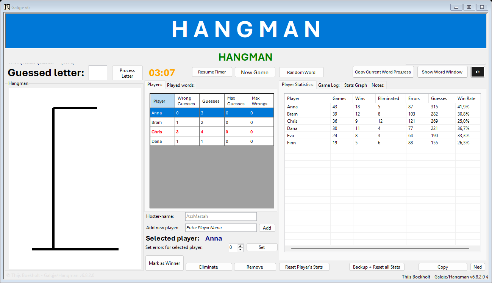
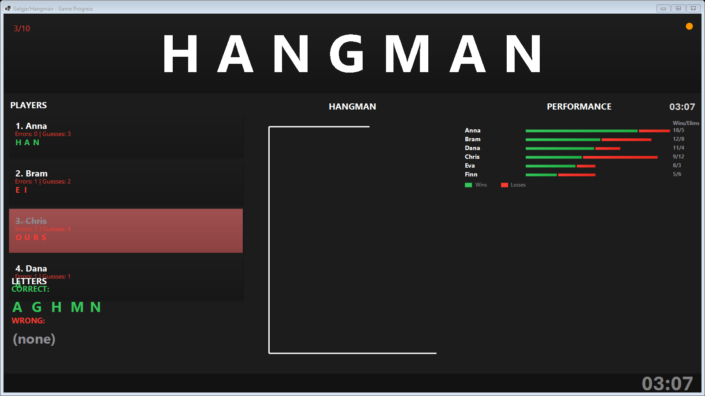
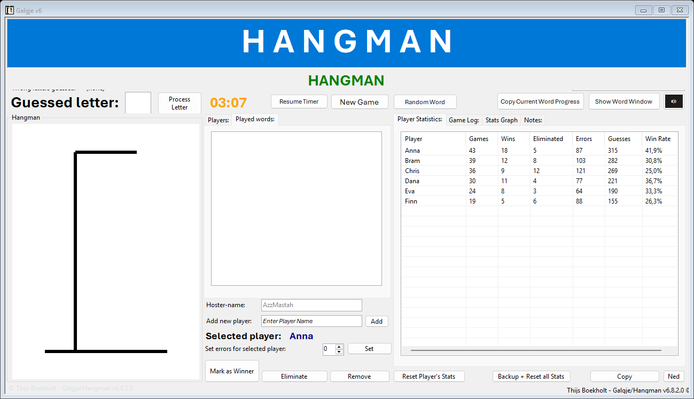
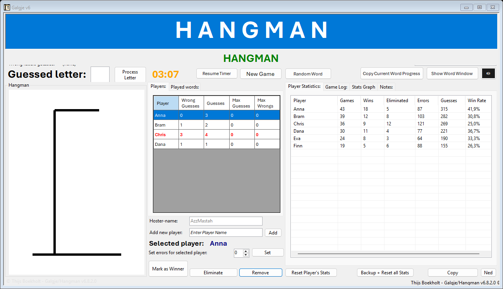
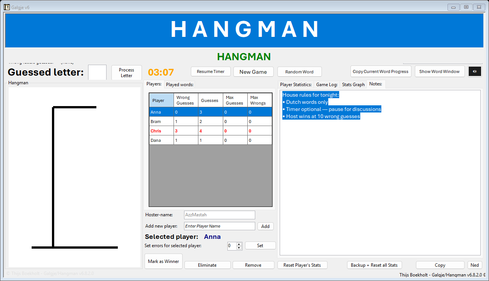

Galgje — Advanced Hangman for Windows
This manual covers every feature of Galgje v6.8.2: from your first game to advanced multiplayer sessions with timers, statistics, achievements, and the presentation Word Display window.

Introduction
Galgje is the Dutch word for "Hangman." This Windows application is a full-featured multiplayer hangman game designed for game nights, classrooms, streams, and competitive sessions with friends.
👥 Unlimited Players
Add as many local players as you want. Each player has individual error tracking and guess history.
⏱️ Live Timer
5-minute countdown with bonus/penalty adjustments. Pause and resume at any time.
📊 Full Statistics
Persistent player stats, performance graphs, and top-10 export.
🖥️ Word Display
Secondary window for projectors, streams, and group viewing.
Installation
Install .NET 8 Desktop Runtime
Download from dotnet.microsoft.com if not already installed. The setup wizard checks this automatically.
Run the Installer
Download from 62.45.220.99:8080/GalgjeHangman or run GalgjeSetup_v6.8.2.exe. Follow the wizard.
Enable manual shortcuts
Leave "Create a desktop shortcut to the User Manual" checked (on by default). The Start Menu always includes User Manual - Import Your Own Stats.
Open the manual after setup
On the finish screen, tick Open the User Manual or launch it from Start Menu / Desktop. See Import Your Own Stats to load your files.
Launch Galgje
Open from the Start Menu or Desktop. On first run, Galgje creates data files in your user profile (see Data Locations).
Main Window Overview
The main window is organized into distinct zones. The screenshot below shows a live game in progress:
For reference, here is a simplified map of the interface:
Key Display Areas
- Current Word — Shows the word as underscores with revealed letters (blue header bar).
- Hangman panel — Visual gallows that updates with each wrong guess (up to 10 stages).
- Correct / Wrong letters — Running lists of all letters guessed correctly and incorrectly.
- Timer — Large countdown display; color changes as time runs low.
- Selected Player — Shows who is currently active for letter guesses.
Quick Start — Your First Game in 5 Steps
Set a word
Type a word in Custom Word and press Enter, or click Random Word for a Dutch word from the OpenTaal list.
Add players
Type a name in Add Player and click Add (or press Enter). Repeat for each participant.
Select a player
Click a row in the Players tab. The selected name appears below the player list.
Guess a letter
Type one letter in the large guess box and press Enter or click Process Letter.
Start the timer (optional)
Click Resume Timer to begin the 5-minute countdown. Use Pause Timer to stop the clock during discussions.
Setting the Word
Custom Word
Enter any word in the Custom Word text field (top-right) and press Enter. The word is converted to uppercase automatically. Spaces and special characters are supported.
Random Word
Click Random Word. Galgje picks a word from the OpenTaal Dutch word list. The button shows "Loading..." while fetching. A bundled offline list is included with the installer; updates are cached in your AppData folder.
Reuse a Played Word
Go to the Played words tab, find a word (use the search box to filter), and double-click it to set it as the current word instantly.
New Game
Click New Game to reset the board, clear guessed letters, reset the hangman, and automatically fetch a new random word. Player stats from the previous round are saved first.
Managing Players

Adding Players
- Click the Players tab (right panel, bottom).
- Type a name in the Add Player field.
- Click Add or press Enter.
Each new player starts with 0 wrong guesses and 0 total guesses. Default players can be pre-loaded from a default_players.ini file if present.
Selecting a Player
Click any row in the Players grid. The Selected Player label updates immediately, and the letter guess box receives focus so you can type right away. Eliminated players have their guess box disabled.
Players Grid Columns
| Column | Description |
|---|---|
| Player | Player name |
| Wrong Guesses | Wrong letters this player has guessed |
| Guesses | Total letters guessed by this player |
| Max Guesses | Total guess limit (10 for 2-player games, unlimited for 3+) |
| Max Wrongs | Wrong guess limit before auto-elimination (4 for 3+ players, 10 for 2) |
Removing a Player
Select the player, then click Remove Player. Their all-time statistics are preserved even after removal.
Setting Errors Manually
Select a player, enter a number in the errors spinner, and click Set. Useful for correcting mistakes or applying house rules.
Reset Individual Stats
Select a player and click Reset Player's Stats to zero their all-time statistics. This cannot be undone without a backup.
Guessing Letters
- Select an active player from the Players grid.
- Type one letter in the large "Guessed Letter" box (only A–Z).
- Press Enter or click Process Letter.
What Happens Next
✅ Correct Guess
All instances of the letter are revealed in the word display. Timer gains +20 seconds. Game summary copied to clipboard.
❌ Wrong Guess
Letter added to wrong letters list. Hangman advances one stage. Timer loses −30 seconds. Wrong-guess sound plays (unless muted).
🔁 Duplicate Guess
Guessing a letter already tried counts as a wrong guess — even if another player guessed it first.
Elimination & Winning
Automatic Elimination
Players are automatically eliminated when they reach their wrong-guess limit (see Game Rules).
Manual Elimination
Select a player and click Eliminate Player. They can no longer guess but remain visible in the player list.
Un-Eliminate
Click Un-Eliminate (in the Players tab area) to restore an eliminated player back to active status.
Mark as Winner
Click Mark as Winner to declare the selected player the winner. This triggers:
- Victory "BING BING" sound (unless muted)
- Winner overlay on the Word Display window
- Automatic screenshot copied to clipboard
- Statistics and achievement updates
Word Completion
When all letters are guessed correctly, the game ends automatically. All active players receive appropriate stat updates.
Timer System
Each game has a 5-minute (300 second) countdown. The timer does not start automatically — you control it manually.
| Action | Effect |
|---|---|
| Resume Timer | Start or resume the countdown |
| Pause Timer | Freeze the countdown |
| Correct letter guessed | +20 seconds (max 5:00) |
| Wrong letter guessed | −30 seconds (min 0:00) |
| Timer reaches 0:00 | Game ends — host wins (see AzzMastah rule) |
Color Indicators
- Green — 5:00 to 3:30 remaining
- Orange — 3:30 to 1:00 remaining
- Red — Less than 1:00 remaining
Host / AzzMastah Rule
The Hoster-name field (default: AzzMastah) identifies the game host. Add "AzzMastah" (or your custom host name) as a regular player for the special host win rules to apply.
When the Host Wins Automatically
- 10 total wrong guesses are reached across all players
- The timer expires (reaches 0:00)
In both cases, the host is declared winner, a special overlay is shown, and the Word Display screenshot is copied to clipboard. The "The Chosen One" achievement unlocks for this feat.
Game Rules & Limits
| Rule | 2 Players | 3+ Players |
|---|---|---|
| Max wrong guesses per player | 10 | 4 |
| Max total guesses per player | 10 | Unlimited |
| Game ends at 10 total wrong guesses | Yes (host wins) | Yes (host wins) |
| Duplicate letter guess | Counts as wrong | Counts as wrong |
Word Display Window
Click Show Word Window to open a secondary presentation window ideal for projectors, large screens, and streaming.

Layout
- Left column — Player cards showing each player's name, status, guessed letters, and errors
- Center — Large animated hangman drawing
- Right column — Performance graph and live statistics
- Bottom — Timer, eliminated players section, and version branding
The Word Display updates in real time as letters are guessed. On game over or when marking a winner, the entire window renders to a bitmap and copies to your clipboard automatically.
Players Tab
The live player roster with real-time statistics. Click any row to select that player for guessing. Columns update instantly after each letter processed.
Played Words Tab

History of all words used in previous games. Use the Search Played Word box above the tabs to filter the list. Double-click a word to reuse it. Select a word and click Delete (if available) to remove it from history.
Player Statistics Tab

All-time statistics for every player who has ever participated:
- Games — Total games played
- Wins — Games won
- Eliminated — Times eliminated
- Errors — Total wrong guesses (all games)
- Guesses — Total letter guesses (all games)
- Win Rate — Percentage of games won
Click any column header to sort. Double-click a player for details. Click Refresh Stats to force a reload. Click Copy Stats Top10 to copy the top 10 players to clipboard.
Click Backup + Reset all Stats to export a timestamped CSV backup and then clear all statistics.
Stats Graph Tab
Visual performance graph showing player win rates and comparative statistics. Scroll horizontally if many players are tracked. Updates when you switch to this tab during gameplay.
Game Log Tab
Timestamped record of every game event: word selections, guesses, eliminations, wins, and system messages. Use Copy Last 25 Log Lines to share recent activity. Clear Log empties the log (saved to file immediately).
Notes Tab

Free-form text area for house rules, word hints, session notes, or observations. Notes auto-save as you type — no save button needed. Content persists between sessions.
Clipboard & Sharing
Galgje integrates deeply with the Windows clipboard for easy sharing to Discord, WhatsApp, or stream chats.
| Trigger | What Gets Copied |
|---|---|
| Correct letter guessed | Formatted game summary: word progress, correct/wrong letters, active players, time remaining |
| Wrong letter guessed | Updated game summary |
| Copy Word Progress | Current word state and letter lists |
| Copy Stats Top10 | Formatted top-10 player leaderboard |
| Copy Last 25 Log Lines | Recent game log entries |
| Mark as Winner / game over | Full Word Display window as an image |
Sound & Mute
Click the 🔊 button (top-right) to toggle sound effects. When muted, the button turns pink and shows 🔇.
- Wrong guess — Plays
wrong_guess.wav - Victory — Plays
bingbing.wavwhen marking a winner
Language (English / Dutch)
Click the NL button (bottom-right) to switch between English and Dutch. All button labels, tab names, and system messages update instantly. Click again (shows EN) to switch back.
Achievements
Galgje tracks 15+ unlockable achievements per player, stored in player_achievements.json. Achievements unlock automatically during gameplay.
First Blood
First correct guess in a game
Speed Demon
Fastest win
The Chosen One
Host wins after 10 total wrong guesses
Sole Survivor
Last player standing
Flawless Victory
Win with zero wrong guesses
Hat Trick / Unstoppable
3 or 5 wins in a row
Decathlon / Century Club
10 or 50 total wins
Centurion
100 games played
Data & File Locations
When installed via the setup wizard, user data is stored in:
%LocalAppData%\Galgje\ (typically C:\Users\YourName\AppData\Local\Galgje\)
Program Files\Galgje — that folder is read-only. On startup, Galgje automatically copies any data files found there into AppData once. For manual restore, copy files directly to the AppData folder above.| File | Contents |
|---|---|
| hangman_log.txt | Full game event log |
| player_statistics.log | All-time player statistics |
| played_words.txt | Word history |
| notes.txt | Notes tab content |
| player_achievements.json | Achievement progress |
| opentaal_wordlist.txt | Cached Dutch word list |
| all_metrics.txt | Local metrics log (if enabled) |
Application files (exe, sounds, icon, documentation) remain in the install folder (typically C:\Program Files\Galgje\).
Example statistics and sample data files are shipped in C:\Program Files\Galgje\example-data\ for you to explore or copy.
Replacing Stats & Data Files with Your Own
Galgje never reads statistics directly from the install folder during normal use. All live data is stored in %LocalAppData%\Galgje\. To load your own statistics — or try the bundled examples — follow these steps:
Close Galgje completely
Exit the application so files are not locked while you copy.
Open your Galgje data folder
Press Win+R, type %LocalAppData%\Galgje, and press Enter. Create the folder if it does not exist yet.
Back up existing files (recommended)
Copy the current contents of the data folder to a safe location before replacing anything.
Copy your files
Copy your own player_statistics.log, played_words.txt, hangman_log.txt, notes.txt, and/or player_achievements.json into the data folder, overwriting the existing files.
Start Galgje
Launch the game. Your statistics, played words, notes, and log history appear immediately in the corresponding tabs.
Try the bundled example stats first
The installer includes sample files in:
C:\Program Files\Galgje\example-data\
Copy the files from that folder into %LocalAppData%\Galgje\ to preview how statistics, played words, notes, and the game log look in the app.
Statistics file format
player_statistics.log uses comma-separated values, one player per line:
- Lines starting with
#are comments and are ignored - Games — total games played
- Wins — games won (must not exceed Games)
- Eliminations — times eliminated
- TotalErrors — cumulative wrong guesses
- TotalGuesses — cumulative letter guesses
Other replaceable files
| File | Format |
|---|---|
played_words.txt | One word per line (plain text) |
hangman_log.txt | Plain text log; one event per line |
notes.txt | Free-form plain text for the Notes tab |
player_achievements.json | JSON file created by Galgje; copy from another installation to transfer achievements |
player_statistics.log manually — it exports a timestamped CSV backup first.%LocalAppData%\Galgje. Galgje only auto-imports from Program Files once on startup if your AppData folder is still empty.Troubleshooting
| Problem | Solution |
|---|---|
| App won't start | Install .NET 8 Desktop Runtime (x64) |
| Random Word fails | Check internet connection; bundled offline list should work without it. Reinstall if opentaal_wordlist.txt is missing from the install folder. |
| No sound | Check the mute button (🔊/🔇) and Windows volume settings |
| Stats not showing | Data lives in %LocalAppData%\Galgje, not Program Files. Copy files there, or restart — Galgje auto-imports from the install folder. |
| Can't guess letters | Ensure a player is selected and not eliminated |
| Timer stuck | Pause and resume, or start a New Game |
Complete Button Reference
| Button | Location | Action |
|---|---|---|
| New Game | Top bar | Reset board and fetch new random word |
| Random Word | Top bar | Pick random Dutch word |
| Process Letter | Top bar | Submit the typed letter guess |
| Pause / Resume Timer | Top bar | Toggle countdown |
| Copy Word Progress | Top bar | Copy word state to clipboard |
| Show Word Window | Top bar | Open Word Display window |
| 🔊 / 🔇 | Top bar | Toggle sound effects |
| Add | Bottom-left | Add new player |
| Mark as Winner | Bottom | Declare selected player winner |
| Eliminate Player | Bottom | Manually eliminate selected player |
| Remove Player | Bottom | Remove player from current game |
| Un-Eliminate | Bottom | Restore eliminated player |
| Set | Bottom | Apply manual error count |
| Reset Player's Stats | Bottom | Clear selected player's all-time stats |
| Backup + Reset all Stats | Bottom-right | Export CSV backup then clear all stats |
| Copy Stats Top10 | Bottom-right | Copy leaderboard to clipboard |
| NL / EN | Bottom-right | Switch language |
| Refresh Stats | Statistics tab | Reload statistics list |
| Clear Log | Game Log tab | Empty the game log |
| Copy Last 25 Log Lines | Game Log tab | Copy recent log to clipboard |
| Delete | Played words tab | Remove selected word from history |